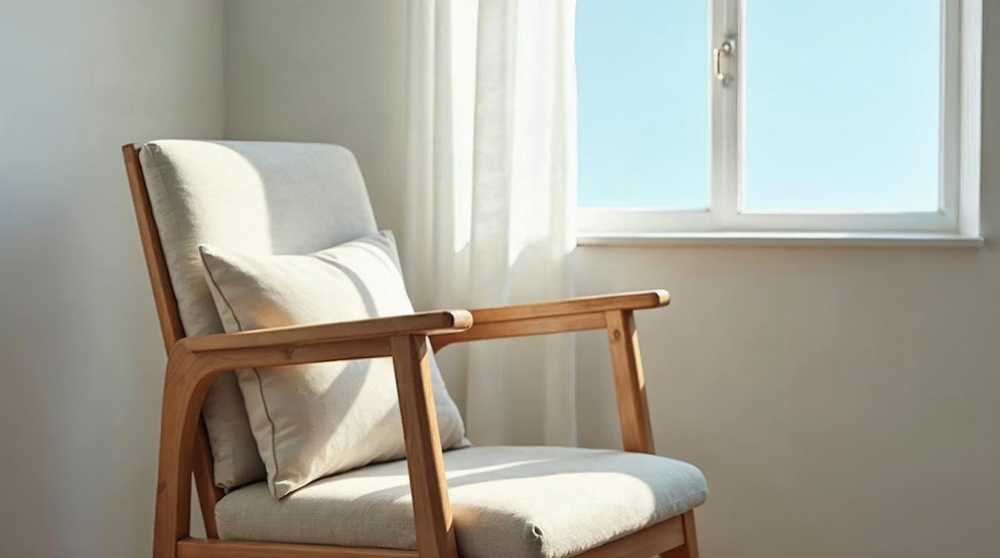
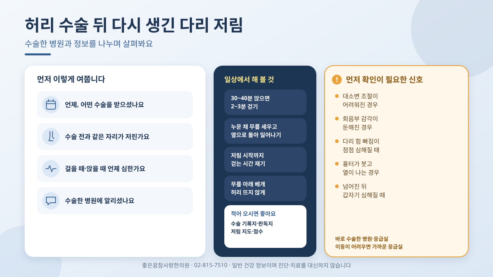

이종호 한의사 감수좋은꿈참사랑한의원 대표원장 (한의사 면허번호 19769)발행 2026-11-25 · 수정 2026-11-25
이 글의 차례
허리 수술을 받고 몇 달, 혹은 몇 해가 지나 다리 저림이 다시 생기면 '수술이 잘못된 걸까', '다시 수술해야 하나' 하는 걱정부터 앞서기 쉽습니다.
다시 생긴 저림은 같은 자리 디스크가 다시 밀려 나온 경우, 수술한 마디의 바로 위아래로 부담이 옮겨 간 경우, 수술 자리가 아물며 생긴 흉터 조직이 신경 주변에 달라붙은 경우, 신경이 지나는 통로가 나이가 들며 좁아진 경우처럼 여러 갈래가 있고, 허리가 아닌 엉덩이 근육이나 다리 혈관, 혈당으로 인한 말초 신경 문제가 비슷하게 느껴지기도 합니다.
그래서 진료 전에 가장 먼저 할 일은 수술한 병원(주치의)에 지금 증상을 알리고 진료 시점을 상의하는 것, 그리고 수술 기록지와 수술 전후 영상 판독지를 손에 챙겨 두는 것입니다. 저림이 수술 전과 같은 쪽, 같은 자리인지, 걸을 때와 앉을 때 어떻게 달라지는지를 1~2주만 적어 두어도 어느 의료기관에서 진료를 받든 상담이 훨씬 구체적이 됩니다.
다만 대소변 조절이 어렵거나, 항문과 사타구니 주변 감각이 둔해지거나, 다리 힘이 점점 빠진다면 기록할 시간 없이 바로 수술한 병원이나 응급실로 가셔야 합니다.
왜 수술한 뒤에도 다리 저림이 다시 생길 수 있을까요
- 디스크 일부를 제거하는 수술은 신경을 누르던 튀어나온 부분을 덜어 내는 것이지, 디스크 전체를 새것으로 바꾸는 것이 아닙니다. 남아 있는 디스크가 시간이 지나며 같은 자리에서 다시 밀려 나오는 경우가 있는 것으로 알려져 있고, 이때는 수술 전과 비슷한 쪽, 비슷한 자리로 저림이 내려오는 경우가 많습니다.
- 나사와 막대로 허리뼈 마디를 고정하는 수술(유합술·고정술)을 받았다면 고정된 마디는 덜 움직이는 대신 바로 위아래 마디가 그만큼 더 움직이며 일을 나눠 맡게 됩니다. 몇 해에 걸쳐 그 옆 마디에 퇴행성 변화가 생기는 것을 흔히 인접 분절 변화라고 부르며, 이 경우 저림이 수술 전과 다른 자리로 내려오기도 합니다.
- 수술한 자리는 아무는 과정에서 흉터 조직이 생기고, 이것이 신경 뿌리 주변에 달라붙으면(유착) 특정 자세나 날씨, 피로에 따라 저림과 당김이 오락가락할 수 있습니다.
- 신경이 지나가는 통로(척추관)는 나이가 들며 인대가 두꺼워지고 관절이 커지면서 조금씩 좁아질 수 있습니다. 오래 걸으면 다리가 저리고 무거워 쉬어야 하고, 앉거나 허리를 앞으로 숙이면 풀리는 모습이 이런 경우의 대표적인 단서입니다.
- 허리가 아닌 곳에서 비슷한 저림이 오기도 합니다. 엉덩이 깊은 근육이 좌골신경 주변을 조이는 경우, 다리로 가는 혈관이 좁아져 걸을 때 종아리가 조이는 경우, 당뇨나 영양 결핍으로 양쪽 발끝부터 저린 경우가 대표적입니다. 혈관 쪽 문제는 앉지 않고 서서 쉬기만 해도 풀리는 경우가 많다는 점이 신경 통로 쪽과 구분하는 단서로 알려져 있습니다.
- 수술 뒤 통증이 줄면서 오래 앉아 일하기, 무거운 물건 들기, 운동량 급하게 늘리기처럼 수술 전 생활로 빨리 돌아가거나, 반대로 겁이 나서 거의 움직이지 않아 허리와 엉덩이 근육이 약해진 것도 다시 부담이 쌓이는 배경이 될 수 있습니다.
- 그래서 같은 '다시 저리다'라도 수술 방법과 부위, 저림의 위치와 양상에 따라 살펴볼 곳이 달라지고, 이 판단의 기준점이 되는 것이 수술 기록과 영상 결과입니다.
- 한의학에서는 오래 앉고 찬 기운에 노출되며 피로가 쌓일 때 허리와 다리로 기혈이 잘 돌지 못해 저림과 당김이 커지는 모습으로 살피기도 합니다. 그래서 허리와 다리만이 아니라 잠, 피로, 몸이 찬 정도도 함께 여쭙습니다.
자주 하는 오해
- "다시 저린 것은 수술이 실패했다는 뜻"이라고 여기기 쉽지만, 수술 뒤 몇 해가 지나 생긴 저림은 수술한 자리와 다른 마디나 다른 원인에서 오는 경우도 있습니다. 원인은 진찰과 영상으로 확인합니다.
- 반대로 "수술한 마디는 이미 손봤으니 이번 저림은 다른 데서 왔을 것"이라고 단정하는 것도 조심해야 합니다. 같은 자리의 변화 여부는 수술한 병원에서 이전 영상과 비교해 보는 것이 가장 정확한 출발점입니다.
- 수술한 병원에 다시 연락하면 바로 재수술 이야기를 들을까 봐 미루는 분이 많습니다. 다시 생긴 저림은 먼저 경과를 보거나 수술 외의 방법부터 의논하는 경우도 많고, 주치의는 수술 전후의 모습을 가장 잘 아는 사람이어서 판단의 기준을 세워 줄 수 있습니다.
- 수술 기록은 병원에 있으니 따로 챙길 필요가 없다고 생각하기도 합니다. 다른 의료기관에서 진료를 받거나 응급실에 가게 될 때 수술명과 부위, 넣은 기구를 정확히 말할 수 있어야 검사와 치료를 안전하게 정할 수 있습니다.
- 저림이 있을 때 허리를 세게 꺾거나 비트는 스트레칭으로 풀어야 한다고 여기는 분도 있습니다. 수술 방법에 따라 피해야 할 동작이 있어, 수술한 병원에서 받은 운동 지침을 먼저 따르고 저림이 다리 아래로 퍼지는 동작은 멈춥니다.
상황별 예시
- 예를 들어 몇 해 전 왼쪽 다리 저림으로 허리 아래쪽 한 마디의 디스크 일부를 제거하는 수술을 받고 한동안 편하게 지내다가, 이삿짐을 옮긴 뒤부터 다시 왼쪽 엉덩이에서 종아리 바깥, 발등까지 저린 경우입니다. 수술 전과 같은 쪽, 비슷한 자리라면 같은 마디의 변화를 함께 확인해야 할 수 있어 수술한 병원에 먼저 연락해 진료 시점을 정하고, 수술 기록지와 당시 MRI 판독지를 챙겨 둡니다.
- 예를 들어 허리뼈 두 마디를 나사로 고정하는 수술을 받은 지 몇 해가 지나, 오래 서서 일하거나 걸으면 이번에는 반대쪽 허벅지 앞쪽이 저리고 무거워지며 앉으면 풀리는 경우입니다. 고정한 마디의 위쪽이나 아래쪽 마디를 함께 살펴봐야 할 수 있어, 수술 기록지에서 몇 번째 허리뼈를 고정했는지 확인해 두고 몇 분 걸으면 저린지 시간을 재어 둡니다. 몸속에 고정 기구가 있다는 사실은 한의원에서 온열이나 자기장 장비를 정할 때도 먼저 알려 주셔야 하는 정보입니다.
- 예를 들어 수술 뒤 허리 통증은 줄었는데 최근 몇 달 사이 양쪽 발바닥이 모래 위를 걷는 것처럼 둔하고 저리며, 마침 혈당이 높다는 이야기를 들은 경우입니다. 양쪽 발끝부터 대칭으로 올라오는 저림은 허리보다 말초 신경 쪽을 함께 확인해야 할 수 있어, 수술한 병원과 함께 내과 진료도 권합니다.
- 예를 들어 수술 뒤 회복이 순조로워 재택근무를 하며 하루 열 시간 가까이 소파와 의자에 앉아 지냈고, 앉아 있으면 오른쪽 엉덩이 깊은 곳이 뻐근하면서 허벅지 뒤로 저림이 내려오다가 일어나 걸으면 덜해지는 경우입니다. 앉는 시간과 자세를 먼저 바꿔 보고 그 변화를 기록하되, 수술한 병원 진료 때 이 내용을 함께 전합니다.
먼저 이렇게 여쭙니다
- 언제, 어느 병원에서, 어떤 이름의 수술을 받으셨는지, 몇 번째 허리뼈 사이였는지 여쭙니다.
- 디스크 일부를 제거한 수술인지, 신경 통로를 넓힌 수술인지, 나사나 케이지 같은 고정 기구를 넣은 수술인지 여쭙니다.
- 수술 직후 저림이 완전히 사라졌는지, 일부가 남아 있었는지, 다시 생긴 것은 언제부터인지 여쭙니다.
- 지금 저림이 수술 전과 같은 쪽, 같은 자리인지, 아니면 반대쪽이나 새로운 자리인지 여쭙니다.
- 걸을 때, 오래 앉아 있을 때, 기침이나 재채기를 할 때, 아침에 일어날 때 중 언제 심한지 여쭙니다.
- 수술한 병원에 지금 증상을 알렸는지, 마지막 외래 진료와 영상 검사는 언제였는지 여쭙니다.
- 복용 중인 약(진통제, 신경통 약, 혈액을 묽게 하는 약 등)과 당뇨·혈압 같은 다른 질환을 여쭙니다.
- 요즘 잠은 어떤지, 일과 생활에서 앉는 시간이나 드는 무게가 달라진 일이 있는지 여쭙니다.
진료 전에 챙겨 두면 좋은 서류와 정보
수술한 병원에서 받아 둘 것
- 수술 기록지(또는 수술 확인서): 수술명, 수술한 날짜, 허리뼈 몇 번째 사이였는지, 디스크 제거·신경 통로 확장·고정 가운데 어떤 방법이었는지, 넣은 기구가 있는지가 적혀 있습니다.
- 퇴원 요약지: 입원 기간의 경과와 퇴원 때 받은 주의 사항, 처방 약이 정리되어 있습니다.
- 영상 판독지와 영상 사본: 수술 전 MRI, 수술 뒤 확인한 X선이나 CT, 가장 최근 영상의 판독지를 받아 두고, 영상 자체는 CD나 병원에서 안내하는 방식으로 복사해 둡니다. 다른 곳에서 새로 찍게 되더라도 이전 영상과 나란히 비교할 수 있어야 변화가 보입니다.
- 외래 기록 가운데 수술 뒤 마지막 진료 소견과 운동·생활 지침서
- 의무기록 사본은 대개 본인이 신분증을 가지고 병원 원무과나 의무기록 창구에서 신청합니다. 가족이 대신 받을 때 필요한 서류, 발급 비용, 걸리는 시간은 병원마다 다르니 해당 병원에 미리 전화로 확인해 주세요.
수술한 병원(주치의)에 전할 것
- 저림이 다시 시작된 시점과 계기(무거운 것을 든 일, 넘어짐, 오래 앉은 일 등)
- 저림의 위치를 표시한 그림, 걸을 때와 앉을 때의 차이, 다리 힘이 빠지는지
- 그사이 다른 의료기관에서 받은 진료와 치료, 복용 중인 약과 한약
- 앞으로 피해야 할 치료나 동작이 있는지, 다음 영상 확인은 언제가 좋은지에 대한 질문
한의원 진료 때 알려 주실 것
- 위 서류와 함께, 몸속 고정 기구나 심장 박동기 같은 전자 의료기기가 있는지 알려 주세요. 극초단파 온열 장비나 자기장 치료기는 몸속 금속과 전자 기기에 따라 쓰지 않거나 부위를 달리해야 해서 먼저 확인합니다.
- 수술한 병원에서 들은 주의 사항과 다음 진료 일정
- 추가 수술이나 시술 일정이 잡혀 있다면 그 날짜. 한약을 복용 중이라면 수술 전 복용 여부를 주치의와 상의할 수 있도록 미리 말씀드립니다.

일상에서 먼저 해 볼 수 있는 것
수술한 병원에서 받은 운동과 생활 지침이 있다면 그것이 먼저입니다. 아래는 그 지침과 부딪히지 않는 범위에서, 진료를 기다리는 1~2주 동안 저림의 흐름을 살피며 해 볼 수 있는 것들입니다.
아침(일어나서 10분)
- 눈을 뜨면 바로 허리를 세워 일어나지 말고, 누운 채로 무릎을 세우고 발목을 위아래로 20번 까딱이며 다리에 피가 돌게 합니다.
- 옆으로 돌아누운 뒤 팔로 침대를 밀며 상체를 일으키고, 다리를 침대 밖으로 내리며 앉습니다. 허리를 비틀거나 한 번에 숙이며 일어나는 동작을 줄이는 방법입니다.
- 세수할 때는 허리를 깊이 숙이기보다 무릎을 살짝 굽히고 한 손으로 세면대를 짚습니다. 자고 일어난 직후 한 시간 정도는 디스크가 물기를 머금어 숙이는 부담에 예민한 시간으로 알려져 있어, 무거운 물건 들기나 깊이 숙이는 일은 뒤로 미룹니다.
낮(앉는 시간 나누기)
- 30~40분 앉으면 일어나 2~3분 걷습니다. 휴대폰 타이머를 맞춰 두면 잊지 않습니다.
- 의자에 깊숙이 앉아 허리 뒤에 작은 쿠션을 받치고, 다리는 꼬지 않으며, 뒷주머니의 지갑은 빼 둡니다.
- 바닥에 양반다리로 앉거나 낮은 소파에 파묻히듯 앉는 자세는 허리를 둥글게 말아 부담을 키우기 쉬워 줄입니다.
- 물건은 몸에 붙여 무릎을 굽혀 들고, 장바구니는 양손에 나눠 듭니다. 수술한 병원에서 정해 준 무게 제한이 있다면 그것을 따릅니다.
걷기(저림이 나타나는 시간 재기)
- 평지에서 편한 속도로 걸으며 몇 분 만에 저림이 시작되는지 휴대폰 스톱워치로 잽니다.
- 저림이 오면 멈추고, 서서 쉬기만 해도 풀리는지, 앉거나 허리를 앞으로 숙여야 풀리는지 적습니다. 이 차이는 신경 통로 쪽인지 혈관 쪽인지 가늠하는 단서가 됩니다.
- 걷기는 저림이 시작되기 직전까지의 시간만큼 하루 2~3번 나누어 하고, 일주일 단위로 그 시간이 늘었는지 줄었는지 비교합니다.
저녁과 잠자리
- 따뜻한 물로 10분 정도 샤워해 허리와 엉덩이를 데웁니다. 수술 흉터 부위는 피부 감각이 둔할 수 있어 뜨거운 찜질팩을 오래 직접 대는 것은 조심합니다.
- 반듯이 누울 때는 무릎 아래에 베개를 받쳐 허리가 뜨지 않게 하고, 옆으로 누울 때는 무릎 사이에 베개를 끼워 골반이 틀어지지 않게 합니다.
- 잠들기 전 그날의 저림 정도를 0~10으로 적고, 밤에 저려서 깬 횟수를 아침에 덧붙입니다.
하지 않는 것
- 저림을 풀겠다고 허리를 세게 비틀거나 뒤로 크게 젖히는 동작, 반동을 주는 스트레칭은 하지 않습니다.
- 스트레칭이나 운동 중 저림이 엉덩이에서 무릎 아래, 발끝 쪽으로 퍼져 내려가면 그 동작은 멈추고 기록해 둡니다.
- 진통제나 신경통 약을 스스로 늘리거나 줄이지 않고, 처방한 의사와 상의합니다.
스스로 점검해 보세요
- 수술 뒤 저림이 거의 사라졌다가 다시 생겼다.
- 지금 저림이 수술 전과 같은 쪽, 같은 자리로 내려온다.
- 걸으면 몇 분 안에 저려 쉬어야 하고, 앉거나 허리를 숙이면 풀린다.
- 오래 앉아 있거나 기침·재채기를 할 때 다리로 저림이 뻗친다.
- 한쪽 발끝이나 뒤꿈치로 서기가 반대쪽보다 어렵다.
- 양쪽 발끝부터 대칭으로 저림이 올라온다.
- 수술 기록지와 영상 결과지가 지금 손에 없고, 마지막 외래 진료가 1년도 더 지났다.
해당하는 항목은 진단이 아니라 진료에서 함께 확인할 단서입니다. 특히 다섯 번째 항목처럼 힘이 빠지는 느낌이 있다면 지켜보기보다 수술한 병원 진료를 먼저 받으세요.
한의원에서 함께 살필 수 있는 경우
- 수술한 병원에서 진찰과 영상 확인을 받았고, 당장 다시 수술할 상황은 아니라는 설명을 들은 뒤 생활 관리와 통증 관리를 이어 가고 싶은 경우
- 오래 앉거나 걸은 뒤 허리와 엉덩이, 허벅지 뒤쪽이 뻐근하고 당기는 날이 잦은 경우
- 수술 뒤 겁이 나서 움직임이 줄었고, 어디까지 움직여도 되는지 일상 동작의 순서를 함께 정하고 싶은 경우
- 저림과 함께 잠이 얕아지고 피로가 쌓여 하루 리듬이 흐트러진 경우
좋은꿈참사랑한의원에서는 첫 방문 때 먼저 이야기를 충분히 듣습니다. 언제 어떤 수술을 받았는지, 수술 뒤 저림이 어떻게 변해 왔는지, 다시 생긴 계기가 있었는지를 여쭙고, 가져오신 수술 기록지와 영상 판독지를 함께 보며 수술한 마디와 지금 저린 자리를 나란히 놓아 봅니다. 서류가 없다면 기억나는 만큼 여쭙고, 다음 방문 때 챙겨 오시도록 안내합니다.
이어서 맥부터 짚고, 혀와 배를 살펴 잠과 피로, 소화, 몸이 찬 정도처럼 몸 전체의 리듬을 확인합니다. 그다음 다리 감각을 양쪽 비교하고, 발끝과 뒤꿈치로 서기, 엄지발가락을 위로 드는 힘처럼 기본적인 힘을 확인하며, 누운 채 다리를 들어 올릴 때 저림이 어디로 내려가는지 봅니다.
엉덩이와 허벅지 주변 근육을 눌러 예민한 자리를 찾고, 필요하다고 판단되면 초음파로 엉덩이와 허벅지 주변 근육과 힘줄 같은 부드러운 조직을 살펴봅니다. 초음파로는 디스크나 신경이 눌린 정도, 고정 기구 주변을 보기 어려워, 그런 확인이 필요하면 수술한 병원에서 영상 검사를 받으시도록 안내합니다.
침이나 온열 치료, 추나는 수술 방법과 시기, 고정 기구 여부, 주치의 안내를 확인한 뒤 신중하게 정합니다. 수술한 마디에 직접 힘을 싣는 추나 동작은 피하고, 몸속 금속이 있다면 극초단파 온열 장비(IS400)나 맥스톰 자기장 치료기를 쓸지, 어느 부위에 쓸지를 먼저 따져 봅니다.
다음 진료에서는 지난번 적어 온 저림 지도와 걷기 시간부터 이어서 여쭙고, 그사이 수술한 병원에서 들은 이야기도 함께 나눕니다. 보험 적용 여부는 방문 전 전화(02-815-7510)로 확인해 주세요.
얼마나 지켜보고 언제 상담할까요
- 저림이 새로 생겼다면 지켜보는 기간과 상관없이 먼저 수술한 병원에 전화로 알리고, 외래 진료를 언제 받을지 상의합니다. 정기 추적 진료 일정이 멀리 잡혀 있다면 앞당길 필요가 있는지도 함께 묻습니다.
- 힘 빠짐이 없고 자세에 따라 저림이 오락가락하는 정도라면, 진료를 기다리는 1~2주 동안 위의 생활 조정을 하며 저림 지도와 걷기 시간을 기록합니다.
- 2주가 지나도 저림의 범위가 넓어지거나, 걸을 수 있는 시간이 계속 짧아지거나, 밤에 저려 자주 깬다면 수술한 병원 진료를 미루지 않습니다.
- 수술한 병원에서 확인을 받은 뒤 생활 관리와 통증 관리를 이어 가고 싶다면 그때 한의원 상담을 받아 보셔도 좋습니다. 확인 결과와 주의 사항을 가져오시면 그에 맞춰 순서를 정합니다.
- 아래 '먼저 확인이 필요한 증상'이 하나라도 있으면 기다리지 않습니다.
이렇게 기록해 오시면 상담이 쉬워집니다
- 수술 기록지(수술명·날짜·허리뼈 마디·수술 방법·넣은 기구), 퇴원 요약지
- 수술 전 MRI와 수술 뒤 영상의 판독지, 가능하면 영상 사본
- 사람 몸 앞뒤 그림에 수술 전 저렸던 자리와 지금 저린 자리를 다른 색으로 칠한 저림 지도
- 걸어서 저림이 시작되기까지 걸린 시간과, 서서 쉴 때와 앉아 쉴 때 풀리는 차이
- 하루 저림 점수(0~10)와 밤에 깬 횟수 1~2주치
- 복용 중인 약과 한약, 당뇨·혈압 등 다른 질환, 몸속 고정 기구나 전자 의료기기 여부
- 수술한 병원에서 들은 최근 소견과 다음 진료 일정
이런 증상은 먼저 확인이 필요합니다
- 소변이 잘 나오지 않거나, 참기 어려워 실수하거나, 대변 조절이 어려워진 경우
- 항문과 사타구니, 엉덩이 안쪽(회음부) 감각이 둔해지거나 화장지를 쓸 때 느낌이 달라진 경우
- 발목이 처져 슬리퍼가 자꾸 벗겨지거나 계단에서 발끝이 걸리는 등 다리 힘 빠짐이 점점 심해지는 경우
- 양쪽 다리가 함께 저리고 힘이 빠지기 시작한 경우
- 수술 흉터 주변이 붉게 붓고 뜨겁거나 진물이 나며 열이 나는 경우
- 넘어지거나 부딪힌 뒤 허리 통증과 다리 저림이 갑자기 심해진 경우
- 한쪽 종아리가 붓고 뜨거우며 누르면 아프거나, 갑자기 숨이 찬 경우
- 누워서 쉬어도 가라앉지 않는 통증이 밤마다 이어지고, 이유 없이 체중이 줄어드는 경우
대소변 장애, 회음부 감각 저하, 진행하는 다리 힘 빠짐은 신경이 심하게 눌린 상태일 수 있어 지체하지 말고 바로 수술한 병원 응급 진료를 받거나 가까운 응급실로 가세요. 이동이 어렵다면 가까운 응급실을 찾습니다. 응급실에서는 수술명과 수술한 병원, 넣은 기구를 먼저 말씀하시면 도움이 됩니다.
복용 중인 약은 처방한 의사와 상의 없이 줄이거나 끊지 않습니다.
관련 글
- 엉덩이에서 다리로 저림이 내려올 때 한의원에서는 무엇을 먼저 묻나요?
- 허리 디스크 초기 신호와 다리 저림은 어떻게 구분하나요?
- MRI에서 디스크가 보인다는데 지금 통증이 다 디스크 때문인가요?

여쭙는 것
- 언제, 어느 병원에서, 어떤 이름의 수술을 받으셨는지, 몇 번째 허리뼈 사이였는지…
- 디스크 일부를 제거한 수술인지, 신경 통로를 넓힌 수술인지, 나사나 케이지 같은 고…
- 수술 직후 저림이 완전히 사라졌는지, 일부가 남아 있었는지, 다시 생긴 것은 언제부…
생활에서 해 볼 것
- 눈을 뜨면 바로 허리를 세워 일어나지 말고, 누운 채로 무릎을 세우고 발목을 위아래…
- 옆으로 돌아누운 뒤 팔로 침대를 밀며 상체를 일으키고, 다리를 침대 밖으로 내리며…
- 세수할 때는 허리를 깊이 숙이기보다 무릎을 살짝 굽히고 한 손으로 세면대를 짚습니다…
한의원에서 함께 살필 것
- 수술한 병원에서 진찰과 영상 확인을 받았고, 당장 다시 수술할 상황은 아니라는 설명…
- 오래 앉거나 걸은 뒤 허리와 엉덩이, 허벅지 뒤쪽이 뻐근하고 당기는 날이 잦은 경우
- 수술 뒤 겁이 나서 움직임이 줄었고, 어디까지 움직여도 되는지 일상 동작의 순서를…
먼저 확인이 필요한 신호
- 소변이 잘 나오지 않거나, 참기 어려워 실수하거나, 대변 조절이 어려워진 경우
- 항문과 사타구니, 엉덩이 안쪽(회음부) 감각이 둔해지거나 화장지를 쓸 때 느낌이 달…
- 발목이 처져 슬리퍼가 자꾸 벗겨지거나 계단에서 발끝이 걸리는 등 다리 힘 빠짐이 점…
한눈에 보는 표
| 구분 | 핵심 |
|---|---|
| 여쭙는 것 | 언제, 어느 병원에서, 어떤 이름의 수술을 받으셨는지, 몇 번째 허리뼈 사이였는지 여쭙니다. 디스크 일부를 제거한 수술인지, 신경 통로를 넓힌 수술인지, 나사나 케이지 같은 고정 기구를 넣은 수술인지 여쭙니다. |
| 생활에서 해 볼 것 | 눈을 뜨면 바로 허리를 세워 일어나지 말고, 누운 채로 무릎을 세우고 발목을 위아래로 20번 까딱이며 다리에 피가 돌게 합니다. 옆으로 돌아누운 뒤 팔로 침대를 밀며 상체를 일으키고, 다리를 침대 밖으로 내리며 앉습니다. 허리를 비틀거나 한 번에 숙이며 일어나는 동작을 줄이는 방법입니다. |
| 한의원에서 함께 살필 것 | 수술한 병원에서 진찰과 영상 확인을 받았고, 당장 다시 수술할 상황은 아니라는 설명을 들은 뒤 생활 관리와 통증 관리를 이어 가고 싶은 경우 오래 앉거나 걸은 뒤 허리와 엉덩이, 허벅지 뒤쪽이 뻐근하고 당기는 날이 잦은 경우 |
| 먼저 확인이 필요한 신호 | 소변이 잘 나오지 않거나, 참기 어려워 실수하거나, 대변 조절이 어려워진 경우 항문과 사타구니, 엉덩이 안쪽(회음부) 감각이 둔해지거나 화장지를 쓸 때 느낌이 달라진 경우 |
자주 묻는 질문
수술한 병원에 먼저 가야 하나요, 한의원부터 가도 되나요?
수술 뒤 저림이 새로 생겼다면 수술한 병원에 먼저 알리고 진료 시점을 상의하시길 권합니다. 이전 영상과 비교해 같은 자리의 변화인지 확인하는 기준점이 그곳에 있기 때문입니다. 확인을 받은 뒤 생활과 통증 관리를 이어 가고 싶을 때 한의원 상담을 함께 받으실 수 있습니다.
수술 기록지와 영상은 어떻게 받나요?
대개 본인이 신분증을 가지고 수술한 병원의 원무과나 의무기록 창구에서 신청하고, 영상은 CD 등으로 복사해 받습니다. 대리 발급에 필요한 서류와 비용, 걸리는 시간은 병원마다 달라 미리 전화로 확인해 주세요.
허리에 나사를 넣는 수술을 받았는데 침이나 온열 치료를 받아도 되나요?
수술 방법과 시기, 고정 기구의 위치, 주치의 안내를 먼저 확인한 뒤 정합니다. 수술한 마디에 직접 힘을 싣는 동작은 피하고, 극초단파 온열 장비나 자기장 치료기는 몸속 금속 여부를 확인해 쓸지, 어느 부위에 쓸지를 따져 봅니다.
저림이 수술 전과 같은 자리면 재발인가요?
같은 자리로 내려오면 같은 마디의 변화를 함께 확인해 볼 단서가 되지만, 저림의 자리만으로 재발인지 정할 수는 없습니다. 수술한 병원에서 진찰과 이전 영상과의 비교로 확인합니다.
한약을 먹고 있는데 수술한 병원에 말해야 하나요?
네, 복용 중인 한약과 일반 약, 영양제는 모두 알려 주시는 것이 좋습니다. 특히 추가 수술이나 시술 일정이 잡히면 복용을 언제까지 할지 주치의와 상의할 수 있도록 미리 말씀해 주세요.
좋은꿈참사랑한의원은 재진 때 지난번 이야기부터 이어서 여쭙니다. 진료시간과 예약은 오시는 길에서 확인하세요.
어디서 상담받을 수 있나요?
좋은꿈참사랑한의원은 서울 동작구 만양로2길 2 신성빌딩 3층·5층(서울 동작구 상도동, 7호선 상도역 3번 출구 근처)에 있습니다. 한의사 3명(이종호 대표원장, 조영기 수석진료원장, 정원영 진료원장)이 진료합니다. 진료시간은 평일 09:30~20:00(점심 13:00~14:00), 토·일·공휴일 09:30~15:00이며, 방문 전 전화로 확인을 권합니다. 예약은 네이버 예약, 카카오톡 상담, 전화 02-815-7510로 받습니다.
이 글은 일반적인 건강 정보이며 개인의 진단이나 치료를 대신하지 않습니다. 증상이 있거나 복용 중인 약이 있다면 진료를 통해 확인하세요. 치료 효과는 개인마다 다를 수 있습니다.
작성 기준: 일반적으로 알려져 있는 건강 정보를 참고해 정리했습니다(대표원장 감수). 증상 기록은 1~2주 동안 하루 1회, 비슷한 시간에 적어 오시면 지난 상태와 비교하기 쉽습니다.